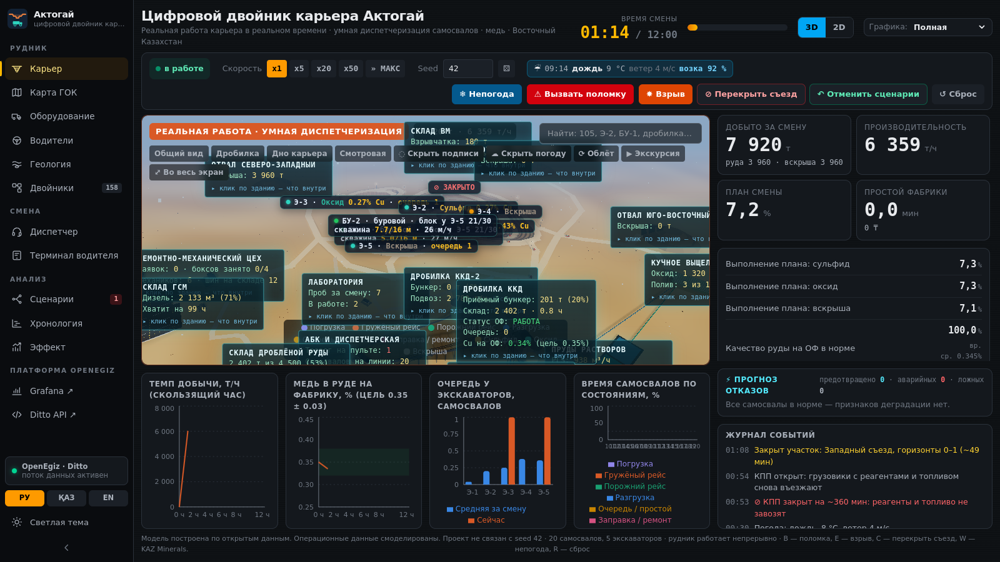

<title>Актогай по шагам</title>
<meta name="claude:viewport-fit-sides" content="cover">
<link rel="preconnect" href="https://fonts.googleapis.com">
<link rel="preconnect" href="https://fonts.gstatic.com" crossorigin>
<link rel="stylesheet" href="https://fonts.googleapis.com/css2?family=IBM+Plex+Mono:wght@400;600&family=IBM+Plex+Sans+Condensed:wght@600;700&family=IBM+Plex+Sans:wght@400;500;600&display=swap">
<style>
  /* Layout: пульт — слева список остановок, справа кадр со стенда и пояснение; на телефоне список сворачивается в полосу */
  :root {
    --bg: #0c0f12;
    --surface: #14181d;
    --surface-2: #1b2027;
    --line: #2a313a;
    --ink: #e8eaed;
    --ink-2: #a9b0ba;
    --ink-3: #727a85;
    --amber: #f5a524;
    --smart: #d95926;
    --display: 'IBM Plex Sans Condensed', 'Arial Narrow', system-ui, sans-serif;
    --body: 'IBM Plex Sans', system-ui, -apple-system, 'Segoe UI', sans-serif;
    --mono: 'IBM Plex Mono', ui-monospace, 'Cascadia Mono', monospace;
    color-scheme: dark;
  }

  body { background: var(--bg); color: var(--ink); font-family: var(--body); font-size: 16px; line-height: 1.6; -webkit-font-smoothing: antialiased; }
  body::before { content: ""; position: fixed; inset: 0 0 auto; height: env(safe-area-inset-top, 0px); z-index: 30; background: var(--bg); }

  .wrap {
    max-width: 78rem;
    margin: 0 auto;
    padding-left: max(16px, env(safe-area-inset-left, 0px));
    padding-right: max(16px, env(safe-area-inset-right, 0px));
  }

  h1, h2, h3 { font-family: var(--display); font-weight: 700; line-height: 1.08; margin: 0; text-wrap: balance; }
  p { margin: 0; }
  .num { font-family: var(--mono); font-variant-numeric: tabular-nums; }
  .eyebrow { font-family: var(--mono); font-size: .72rem; letter-spacing: .14em; text-transform: uppercase; color: var(--ink-3); }

  /* ── шапка ── */
  header { border-bottom: 1px solid var(--line); }
  header .wrap { padding-block: 1.6rem 1.4rem; }
  header h1 { font-size: clamp(1.75rem, 5vw, 2.6rem); letter-spacing: -.015em; text-transform: uppercase; margin-top: .5rem; }
  header h1 span { color: var(--amber); }
  header .lede { margin-top: .7rem; max-width: 56ch; color: var(--ink-2); }
  .repo { margin-top: 1rem; display: inline-flex; align-items: center; gap: .5rem; font-family: var(--mono); font-size: .82rem; color: var(--ink-2); text-decoration: none; border-bottom: 1px solid var(--line); padding-bottom: 2px; }
  .repo:hover { color: var(--ink); border-color: var(--amber); }

  /* ── видео ── */
  .film { padding-block: 1.75rem 0; }
  .film-head { display: flex; align-items: baseline; gap: .75rem; flex-wrap: wrap; margin-bottom: .8rem; }
  .film-head h2 { font-size: 1.15rem; }
  .film-head .eyebrow { margin-left: auto; }
  video { width: 100%; display: block; border-radius: 12px; border: 1px solid var(--line); background: #000; aspect-ratio: 16 / 9; max-width: 100%; }

  /* ── шаги ── */
  .steps { padding-block: 2.25rem 3rem; display: grid; gap: 1.5rem; grid-template-columns: 15rem minmax(0, 1fr); align-items: start; }
  @media (max-width: 860px) { .steps { grid-template-columns: minmax(0, 1fr); } }

  .rail { position: sticky; top: calc(env(safe-area-inset-top, 0px) + 1rem); display: flex; flex-direction: column; gap: .15rem; }
  @media (max-width: 860px) {
    .rail { position: static; flex-direction: row; overflow-x: auto; gap: .4rem; padding-bottom: .4rem; }
    .rail button { white-space: nowrap; }
    .rail .t { display: none; }
  }
  .rail button {
    display: flex; align-items: baseline; gap: .6rem; text-align: left;
    font-family: var(--body); font-size: .9rem; color: var(--ink-3);
    background: none; border: 0; border-left: 2px solid var(--line);
    padding: .45rem .7rem; cursor: pointer; min-width: 0;
  }
  @media (max-width: 860px) { .rail button { border-left: 0; border-bottom: 2px solid var(--line); } }
  .rail button:hover { color: var(--ink-2); }
  .rail button[aria-current="true"] { color: var(--ink); border-color: var(--amber); background: var(--surface); }
  .rail button .n { font-family: var(--mono); font-size: .75rem; color: var(--ink-3); }
  .rail button[aria-current="true"] .n { color: var(--amber); }

  .stage { min-width: 0; }
  .shot {
    border: 1px solid var(--line); border-radius: 12px; overflow: hidden;
    background: var(--surface); aspect-ratio: 16 / 9; max-width: 100%;
  }
  .shot img { width: 100%; height: 100%; object-fit: cover; object-position: top left; display: block; }

  .caption { margin-top: 1.1rem; }
  .caption .eyebrow { display: block; margin-bottom: .35rem; }
  .caption h3 { font-size: clamp(1.25rem, 3.5vw, 1.6rem); letter-spacing: -.01em; }
  .caption p { margin-top: .6rem; color: var(--ink-2); max-width: 64ch; }
  .caption ul { margin: .8rem 0 0; padding-left: 1.1rem; color: var(--ink-2); max-width: 64ch; }
  .caption li { margin-top: .3rem; }
  .caption b { color: var(--ink); font-weight: 600; }

  .nav { display: flex; align-items: center; gap: .6rem; margin-top: 1.5rem; flex-wrap: wrap; }
  .nav button {
    font-family: var(--body); font-weight: 600; font-size: .92rem;
    border-radius: 10px; padding: .6rem 1rem; cursor: pointer;
    border: 1px solid var(--line); background: var(--surface); color: var(--ink);
  }
  .nav button:hover:not(:disabled) { background: var(--surface-2); border-color: var(--ink-3); }
  .nav button:disabled { opacity: .35; cursor: default; }
  .nav .count { font-family: var(--mono); font-size: .85rem; color: var(--ink-3); margin-left: auto; }

  footer { border-top: 1px solid var(--line); }
  footer .wrap { padding-block: 1.75rem 2.5rem; }
  .note { color: var(--ink-3); font-size: .82rem; max-width: 64ch; line-height: 1.55; }
  .note + .note { margin-top: .6rem; }

  :focus-visible { outline: 2px solid var(--amber); outline-offset: 2px; border-radius: 6px; }
  @media (prefers-reduced-motion: reduce) { * { transition: none !important; animation: none !important; } }
</style>

<header>
  <div class="wrap">
    <p class="eyebrow">Цифровой рудник на OpenEgiz · команда 037</p>
    <h1>Двойник карьера <span>Актогай</span> по шагам</h1>
    <p class="lede">Семь экранов рабочего стенда: от карьера в 3D до экономического эффекта в тенге. Все кадры сняты с работающей системы, числа на них — настоящие значения модели в тот момент.</p>
    <a class="repo" href="https://github.com/openegiz-contest/team-037">github.com/openegiz-contest/team-037</a>
  </div>
</header>

<main>
  <div class="wrap film">
    <div class="film-head">
      <h2>Сначала — как это выглядит в работе</h2>
      <span class="eyebrow">2 мин 55 с · с озвучкой</span>
    </div>
    <video controls preload="metadata" poster="shots/mine.png" playsinline>
      <source src="../aktogay-demo-ru-web.mp4" type="video/mp4">
      Ваш браузер не воспроизводит видео. Запись демо лежит в репозитории: team/aktogay/presentation/aktogay-demo.mp4
    </video>
  </div>

  <div class="wrap steps">
    <nav class="rail" aria-label="Шаги">
      <button type="button" data-go="0" aria-current="true"><span class="n">01</span><span class="t">Карьер в 3D</span></button>
      <button type="button" data-go="1"><span class="n">02</span><span class="t">Что внутри здания</span></button>
      <button type="button" data-go="2"><span class="n">03</span><span class="t">Карта комбината</span></button>
      <button type="button" data-go="3"><span class="n">04</span><span class="t">Двойники в Ditto</span></button>
      <button type="button" data-go="4"><span class="n">05</span><span class="t">Сценарии «что если»</span></button>
      <button type="button" data-go="5"><span class="n">06</span><span class="t">Эффект системы</span></button>
      <button type="button" data-go="6"><span class="n">07</span><span class="t">Три языка</span></button>
    </nav>

    <div class="stage">
      <div class="shot">
        
      </div>

      <div class="caption">
        <span class="eyebrow" id="cap-eyebrow">Шаг 01 · раздел «Карьер»</span>
        <h3 id="cap-title">Реальная смена в 3D</h3>
        <div id="cap-body">
          <p>Сцена построена по той же геометрии, что и граф дорог, — это не декорация рядом с моделью, а она же. Три выработки с уступами по 15 метров, спиральные съезды, дробилка с конвейером на фабрику, отвалы, карты выщелачивания.</p>
        </div>
      </div>

      <div class="nav">
        <button type="button" id="prev" disabled>← Назад</button>
        <button type="button" id="next">Дальше →</button>
        <span class="count num" id="count">01 / 07</span>
      </div>
    </div>
  </div>
</main>

<footer>
  <div class="wrap">
    <p class="note">Геометрия карьера, дороги и контур хвостохранилища — реальные: со снимка и из OpenStreetMap. Климат реальный, нормы ERA5 за 2015–2024 годы. Операционная телеметрия смоделирована: открытых данных по Актогаю нет.</p>
    <p class="note">Модель построена по открытым данным. Проект не связан с KAZ Minerals. Лицензия MIT.</p>
  </div>
</footer>

<script>
  (function () {
    var STEPS = [
      {
        img: 'shots/mine.png',
        eyebrow: 'Шаг 01 · раздел «Карьер»',
        title: 'Реальная смена в 3D',
        body: '<p>Сцена построена по той же геометрии, что и граф дорог, — это не декорация рядом с моделью, а она же. Три выработки с уступами по 15 метров, спиральные съезды, дробилка с конвейером на фабрику, отвалы, карты выщелачивания.</p>' +
              '<ul>' +
              '<li>Кольцо под самосвалом — цвет состояния, кузов окрашен цветом материала и опрокидывается при разгрузке.</li>' +
              '<li>Маршрут считается по графу дорог, машины держат дистанцию и не проезжают сквозь технику.</li>' +
              '<li>Солнце идёт по небу Актогая: к вечеру зажигаются окна и мачты. Метель и пыль видны на сцене и убираются кнопкой.</li>' +
              '</ul>'
      },
      {
        img: 'shots/inside.png',
        eyebrow: 'Шаг 02 · клик по зданию',
        title: 'Что внутри и почему',
        body: '<p>Любое здание на сцене открывается внутрь. У дробилки, фабрики и гаража — трёхмерный цех: мельницы, гидроциклоны, флотация, конвейеры, ремонтные боксы. У остальных объектов — мнемосхема.</p>' +
              '<ul>' +
              '<li>Каждый агрегат — <b>собственный двойник в Ditto</b>: мощность, загрузка, температура подшипника.</li>' +
              '<li>На схеме отмечено, какой датчик даёт каждую величину — конвейерные весы, поточный анализатор руды, пьезометры дамбы.</li>' +
              '</ul>'
      },
      {
        img: 'shots/map.png',
        eyebrow: 'Шаг 03 · раздел «Карта ГОК»',
        title: 'Не только карьер, а весь комбинат',
        body: '<p>Руда карьером не заканчивается, поэтому модель доведена до готового продукта.</p>' +
              '<ul>' +
              '<li><b>Сульфидная ветка:</b> дробление, склад, флотация, концентрат на склад и в вагоны.</li>' +
              '<li><b>Оксидная:</b> карты кучного выщелачивания с графиком орошения, пруды, завод SX-EW. Катодная медь считается по закону Фарадея.</li>' +
              '<li><b>Инфраструктура:</b> подстанции и ЛЭП, вахтовый посёлок, КПП с автовесами, склад ГСМ, РМЦ, резервуары воды, лаборатория, склад взрывматериалов.</li>' +
              '</ul>'
      },
      {
        img: 'shots/twins.png',
        eyebrow: 'Шаг 04 · раздел «Двойники»',
        title: 'Всё, что лежит в Ditto',
        body: '<p>158 двойников, связанных в иерархию. Связи заданы в самих двойниках: <b>_parents</b> строит дерево, <b>feeds</b> описывает поток материала — экскаватор в дробилку, дробилка на фабрику.</p>' +
              '<ul>' +
              '<li>В карточке — паспорт объекта, все признаки с единицами и мини-графиками, подсветка изменений.</li>' +
              '<li>У самосвала семь датчиков: ГНСС, бортовое взвешивание, топливо, температура через ЭБУ по CAN J1939, вибродатчик рамы, давление шин, бортовой контроллер.</li>' +
              '<li>Кнопка «Сравнить» открывает тот же объект в теневом расчёте рядом.</li>' +
              '</ul>'
      },
      {
        img: 'shots/scenarios.png',
        eyebrow: 'Шаг 05 · раздел «Сценарии»',
        title: 'Меняем условия, не трогая код',
        body: '<p>Поломка экскаватора, перекрытый съезд, внеплановый взрыв, отключение энергии, ливень на хвостохранилище, остановка орошения, непогода, перебои с топливом, нет шин, закрыт КПП, новая смена.</p>' +
              '<ul>' +
              '<li>Команда — это запись в двойник <b>org.aktogay:control</b>, поэтому её можно отправить кнопкой, из панели Grafana или обычным curl.</li>' +
              '<li>Каждый сценарий отменяется, и у каждого есть свой срок окончания. Справа видно, что сейчас идёт на руднике и сколько осталось.</li>' +
              '<li>Таблица «что было бы без системы» считается тут же и выгружается в CSV или PDF.</li>' +
              '</ul>'
      },
      {
        img: 'shots/effect.png',
        eyebrow: 'Шаг 06 · раздел «Эффект»',
        title: 'Сколько это стоит в тенге',
        body: '<p>Карьер считается дважды на одних и тех же событиях: с системой и без неё. Слева — теневой расчёт с закреплением самосвалов, справа — реальная работа. Поломки, дороги и взрывы у обоих одинаковые, поэтому сравнение честное.</p>' +
              '<ul>' +
              '<li>Крупная цифра — эффект <b>в этот момент смены</b>, он скачет вместе с условиями. На кадре идёт дождь и действует поломка.</li>' +
              '<li>Устойчивая оценка — <b>7,2 млрд ₸ в год</b>: среднее по 20 сменам с разными seed. Система добыла не меньше во всех двадцати.</li>' +
              '<li>Формула раскрывается прямо на экране: простои, дробилка, топливо, ремонты, потери меди.</li>' +
              '</ul>'
      },
      {
        img: 'shots/kk.png',
        eyebrow: 'Шаг 07 · переключатель РУ · ҚАЗ · EN',
        title: 'Интерфейс на трёх языках',
        body: '<p>Переводится весь интерфейс, а не только меню: подписи в 3D-сцене, мнемосхемы, журнал событий, карточки двойников.</p>' +
              '<ul>' +
              '<li>Запуск — одна команда <b>make aktogay</b> на чистой Ubuntu 24.04 с Docker. Внешних датасетов нет.</li>' +
              '<li>Без видеокарты сцена сама переходит в лёгкий режим — проверено в headless Chrome.</li>' +
              '</ul>'
      }
    ];

    var i = 0;
    var img = document.getElementById('shot');
    var eyebrow = document.getElementById('cap-eyebrow');
    var title = document.getElementById('cap-title');
    var bodyEl = document.getElementById('cap-body');
    var count = document.getElementById('count');
    var prev = document.getElementById('prev');
    var next = document.getElementById('next');
    var rail = Array.prototype.slice.call(document.querySelectorAll('.rail button'));

    function pad(n) { return (n < 10 ? '0' : '') + n; }

    function show(k) {
      i = Math.max(0, Math.min(STEPS.length - 1, k));
      var s = STEPS[i];
      img.src = s.img;
      img.alt = 'Экран стенда: ' + s.title;
      eyebrow.textContent = s.eyebrow;
      title.textContent = s.title;
      bodyEl.innerHTML = s.body;
      count.textContent = pad(i + 1) + ' / ' + pad(STEPS.length);
      prev.disabled = i === 0;
      next.disabled = i === STEPS.length - 1;
      rail.forEach(function (b, n) { b.setAttribute('aria-current', String(n === i)); });
    }

    rail.forEach(function (b) {
      b.addEventListener('click', function () { show(Number(b.dataset.go)); });
    });
    prev.addEventListener('click', function () { show(i - 1); });
    next.addEventListener('click', function () { show(i + 1); });

    document.addEventListener('keydown', function (e) {
      var tag = (e.target && e.target.tagName) || '';
      if (tag === 'INPUT' || tag === 'TEXTAREA' || tag === 'VIDEO') return;
      if (e.key === 'ArrowRight') { show(i + 1); }
      else if (e.key === 'ArrowLeft') { show(i - 1); }
    });

    // предзагрузка следующих кадров, чтобы шаг не моргал
    STEPS.forEach(function (s) { var p = new Image(); p.src = s.img; });
  })();
</script>
